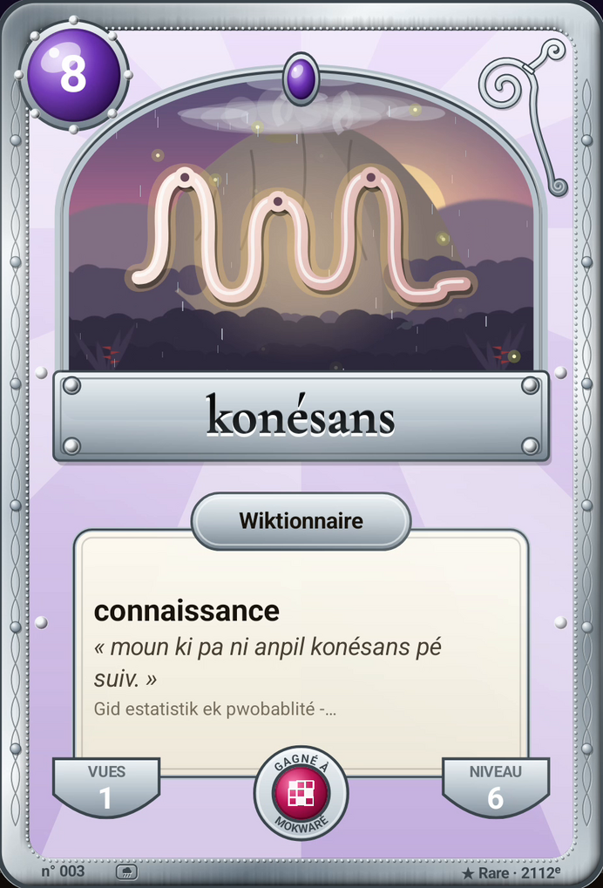

La newsletter · octobre 2026
Des lucioles
dans la nuit
des forêts
Le ciel des cartes s'anime, et un avis change l'accueil.
La newsletter · octobre 2026
Le ciel des cartes s'anime, et un avis change l'accueil.
Gratuit · Open source · Zéro publicité · 100 % hors ligne · Potomitan™
